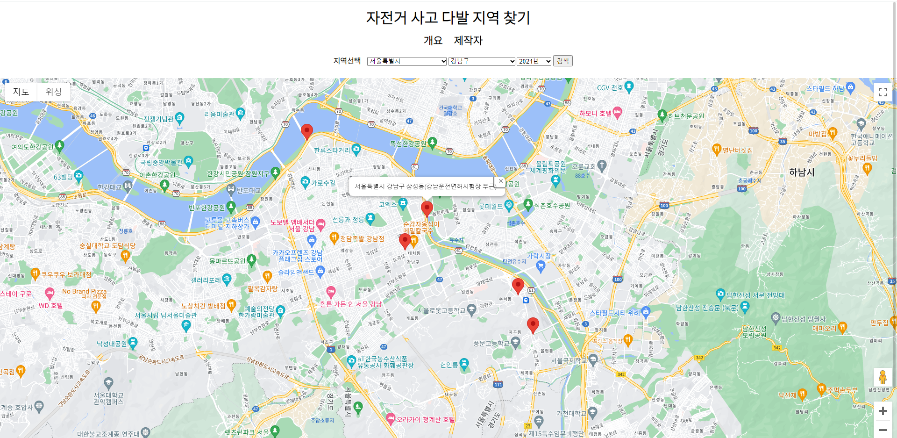

사용 기술
대표 프로젝트
납품·판매
bot-module (비공개)
주문제작·판매용 모듈형 디스코드 봇 프레임워크. 기능을 모듈 단위로 골라 담아 납품하고, CI로 검증합니다. 소스는 비공개이며 문의 시 안내해 드립니다.
Python · discord.py그 외 프로젝트
dinnerpad
인터넷 없이 쓰는 PC용 런치패드 사운드보드. 전역 단축키와 Windows 설치 파일 배포.
JavaScript · Windowswalkytalky
산책 시간을 입력하면 현재 위치에서 왕복 산책 경로를 만들어 주는 모바일 앱.
TypeScript · React Nativenapolitan-game
나폴리탄 괴담을 옮긴 웹 게임. 누구나 fork 해서 Cloudflare 무료 플랜으로 자기 방을 띄울 수 있습니다.
JavaScript · Cloudflare
bike-accident (2023)
공공데이터 API로 자전거 사고 다발 지역을 지역별로 보여주는 사이트. 첫 공개 프로젝트입니다.
JavaScript · 공공데이터